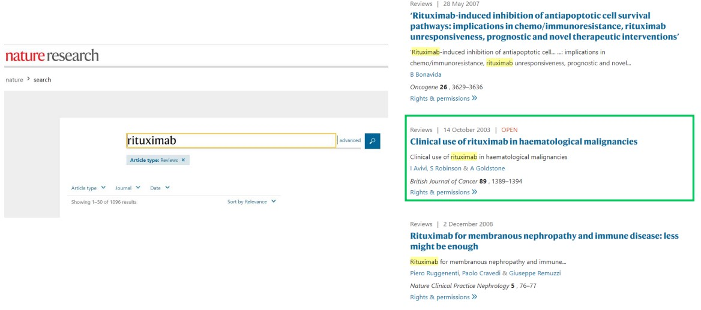

4 Case Study: Rituximab
In this week’s lecture, prof. Asial runs through some common tips for searching for information on the web. He also illustrates his findings (as an example) on the FDA-approved antibody Rituximab.
Prof. Asial also recommends the above reading for those who want to know more about therapeutic antibodies and their use in diseases.
4.1 Potential Sources and Trail Following
Prof. Asial lists some sources:
Nature Reviews

Nature Reviews’ Search Engine Nature Reviews provides rigorous review articles on scientific topics.
Google Images
Using Google Images to Search for Mechanisms of Action Google Images is a nice starting place when trying to look for graphics to explain an antibody’s mode of action.
PubMed
PubMed’s Search Engine PubMed is also a nice starting point to search for information.
Google Scholar
Google Scholar’s Search Engine This is a very common search engine used to search for scholarly information, yet is also a good starting point.
4.1.1 Reading Articles
Often times in papers, author(s) may reference one or more papers. In some cases, following the reference trail may be handy in helping to find information about the antibody.
Antibodies may also have different names - as is the case with Rituximab.
4.2 Case Study on Rituximab
Lymphoma is a cancer of the lymphocytes (i.e., B and / or T-cells).
In Hodgkin lymphoma patients, patients exhibit Reed-Sternberg cells (i.e., giant lymphocytes).
Lymphoma cases represent 2.8% of all cancer cases (about 510000 cases) worldwide and 2.6% of all cancer-related fatalities (about 250000 deaths) worldwide.
In Singapore, lymphoma represents 4.7% of all cancer cases (about 1099 cases) and about 3% of all cancer-related fatalities (about 361 deaths). It is also the 5th most common cancer among males.
4.2.1 Possible Mechanisms and Treatment
When B-cells mature, they begin expressing a protein called Cluster of Differentiation 20 (i.e., CD20). Newly-formed B-cells do not express this protein.
Hence, a potential therapy for Hodgkin lymphoma could be to deplete B-cell numbers via targeting with monoclonal antibodies.
4.2.2 Rituximab’s Mode of Action
When Rituximab binds to a B-cell (i.e., opsonization), the tagged B-cell can be eliminated on one of three ways:
Complement Activation Cascade
This was covered during week 2. The cascade eventually results in the recruitment of protein called the membrane attachment complex (i.e., MAC). This protein causes lysis and elimination via antibody-dependent cellular cytotoxicity (i.e., ADCC).
Antibody-Dependent Cellular Phagocytosis (i.e., ADCP)
The crystallizable fragments of Rituximab can also recruit macrophages to the site of infection for phagocytosis.
NK Cell Recruitment
The antibody can also recruit NK cells to the site of infection via Fc\(\gamma\)RIII receptors.
4.2.3 CD20 Target
CD20 is an integral protein that is exclusively expressed by B-cells. It has four trans-membrane alpha helices and two extracellular loops (where Rituximab binds).
CD20 is thought to be involved in B-cell differentiation, if not also function as an ion channel (though this yet to be confirmed).
Via cryo-electron microscopy, it is confirmed that CD20 is a dimer tha binds two Rituximab antigen binding fragments (Rituximab mainly binds to the ECL2 region of CD20).
4.2.4 Antibody Discovery, Expression, and Purification
Rituximab is identified by hybridoma cells and cloned into mammalian expression vectors. The antibody is expressed in CHO cells and purified via protein A chromatography.
In another source, the authors claim that the antigen-binding fragments of Rituximab can also be produced in bacterial perplasm; antibodies (i.e., the IgG variety) are produced in HEK293 cells before they are secreted into extracellular media. The authors used protein G chromatography and size-exclusion chromatography.